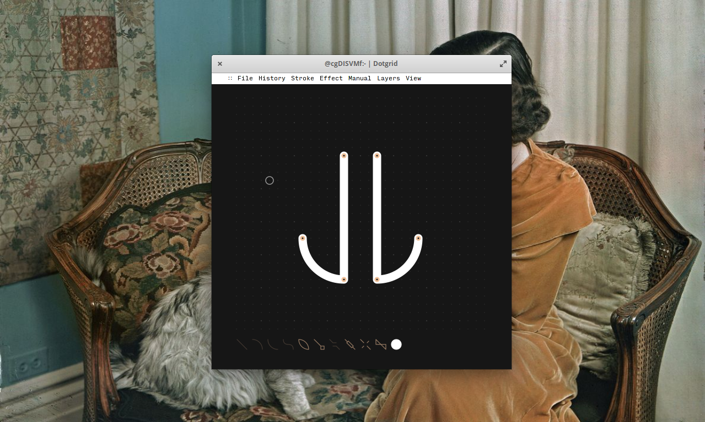
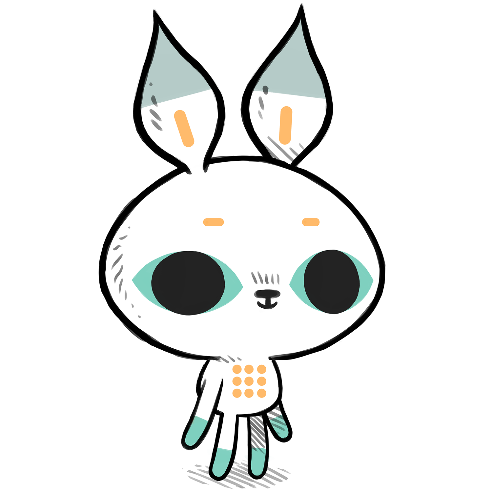
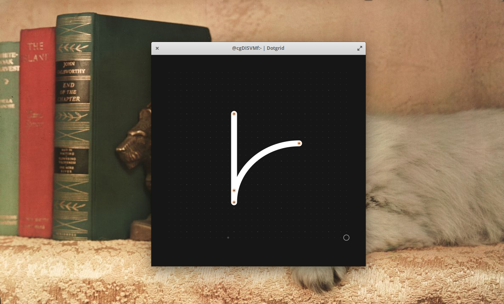

dotgrid
- introduction
- dotbit
- story
- Distributions
- tutorial
- line
- arcs
- bezier
- close
- line cap
- line join
- line thickness
- mirror
- fill
- color
- other functions
- drawing complex shapes
- visual
- shortcut quick list
- License
- Make a pull request
introduction
Dotgrid is a grid-based vector drawing software designed to create logos, icons and type. It supports layers, the full SVG specs and additional effects such as mirroring and radial drawing. Dotgrid exports to both PNG and SVG files.
The application was initially created for internal use, and later made available as a free and open source software. It was developed while in Tonga and in New Zealand in 2017.
dotbit
Meet Dotbit, the mascot for Dotgrid. Dotbit is there to talk about updates relating to Dotgrid.
download
story
Back in 2016, we experienced frequent failures with both software & hardware, largely due to our small energy storage and lack of reliable connectivity. The solution was to create tools that would be better suited to our needs. The objective was to replace the bloated, closed-source or subscription software that we were using to do creative work, such as Photoshop, Xcode and Ableton. We were somewhat familiar with web technologies, so we decided to build our programs on this new framework called Electron.
While solving some of our issues, Electron was rapidly increasing in size and soon joined the rest of the software that we wanted to do away with. Our focus shifted toward reducing our energy use, and to ensure reliability by removing all dependencies.
To transition toward our new goals, we developed offline web versions as temporary stand-ins while researching ways to build more resilient software. We eventually ported our tools to C, but while we had achieved ideal energy usage, portability was still an issue, so we kept looking. We learnt 6502 assembly, seeing players run our NES game on all these different platforms gave us a new idea.
And so, in 2021 we took our biggest leap yet toward longtermism and designed a small virtual machine with a focus on implementability; meaning that moving forward, our software will live on a virtual machine. In other words, the code will stop having to be ported, but instead to make something available on a new platform would our needs or devices change, the emulator remains the only piece of code to be ported, which is explicitly designed to be easily implemented.
This is where we are now. uxn may solve our cross-platform issues, while being extremely light. It took us a long while to get here, we hope that one day the Uxn versions of our software replace the desktop and web versions [16.05.21].
Go slow, and fix things.
Distributions
The major distributions are the SDL version (written in ANSI C), the web version and the desktop version.
The most stable version is currently the desktop version from 2017 (downloadable below).
Download
tutorial
Upon opening the application, you are presented with a dotted grid, which can be made bigger, or smaller, by resizing the window. A list of tools, represented as icons, sits on the bottom of the window.
Clicking anywhere on the grid will add a white dot to the grid, and by adding additional dots to the grid, notice how the available tool icons become lighter, that means you have enough points to use them, their icon will darken again when you don't.
line
Add two points on the grid. Selecting Line(the diagonal line icon) will link the two points together with a straight white line.

arcs
Press backspace to clear your last segment, and draw another two sets of points, but this time, click on Arc. This, will connect your two points with a curve.
If you undo your last move with ⌘ z, connect your two points again by pressing Arc Reverse(the inverse curve icon). This creates an inverted curve.

bezier
Place two dots on your grid, with a third between them but offset, then press Bezier(the S icon). A white dot will appear separate from the main line, this is a handle that you can use to create your curve. Move the handle (or third point) to change its shape. Example below has more points, and therefore more handles to create complex shapes.

close
Create 3 points on the grid, press Line, then press Close (the flat oval icon), your shape will complete itself. If you don't close a shape, you won't be able to fill it, and it will create problems when using Line cap.

line cap
Make a triangle on the grid using 3 points, select the Line to connect them, then, select Linecap (line with a diamond shape at the end). By default, you get a 'round' line cap, you can cycle through the different types by pressing the linecap icon again. You have 3 linecap styles to choose from:
- Round A rounded end cap is added to the end of the line
- Butt A flat edge is added to the end of the line
- Square A square end is added to the end of the line
line join
Add 3 points to the grid to make a triangle, Close the shape and then select Line Join (the icon with two 'hockey sticks' meeting each other).
Line Join changes the look of the corners of your closed shapes, like Line Cap, you can choose from the 3 styles: Round, butt and square. You can cycle between the 3 by pressing on the icon repeatedly. The shortcut to use it is:
line thickness
You can increase or decrease the thickness of your line anytime, using Line Thickness (the line with rectangle over it). The shortcuts to alter the line thickness are:
- Thicker }
- Thinner {
- Thicker +5 ]
- Thinner -5 [
mirror
Drawing a shape, and select Mirror (the icon with 4 lines that aren't crossing), will mirror the image horizontally on the canvas. Pressing on it again, will mirror it vertically, doing it again, mirrors it 180 degrees from the center.
You can tell which sort of mirroring you've got, by seeing the changes in the icon on the menu. To remove the effect, click on the icon until it returns to its original state, with the lines not crossing.
fill
Drawing a closed shape, and selecting Fill (icon resembling a twisted rectangle) will fill it with a single colour. Pressing on the icon again, will remove the fill. Know that if you have other closed shapes on your canvas, this function will fill them all. The shortcut to use it is:

color
You can change the colour of any shape, by clicking on the white circle on the lower right-hand side and entering a colour code(a hex, like FF0000).

other functions
Move points - You can move any point, any time, by selecting it with your cursor and moving it around. If you choose to move a point that is part of an existing shape, it will warp the shape.
Grid on/off - You can toggle the grid, on and off, to better view a design using the shortcut H.
Layers - You can toggle between each layer by using the shortcuts:
- ⌘ 1 for Layer 1
- ⌘ 2 for Layer 2
- ⌘ 3 for Layer 3
Dots will appear over the shapes of the layer that is selected. Having multple layers, enables you to have designs of varying colour and complexity.
drawing complex shapes
To create a circle, draw 5 points on the grid, with the 5th returning to the starting point, then press Arc. You will now have a circle. Select Close to close the shape. The roundness of your circle will depend on where you placed your points. You can always adjust, by selecting the points individually and moving them around.
When making complex shapes, mind how you build your shapes and how the lines will connect, the order will affect your design.
visual
You can change the look and colour of Dotgrid. To do this, download themes from our itch.io page. You can view the colour palettes of each theme in the preview, once you find something you like, drag the file (.svg file) onto Dotgrid. The colours will change instantly.
These themes are part of the Ecosystem Theme, which means that you can apply a theme to any supported app (Left, Donsol, Orca and Ronin).
You can also create your own themes.
shortcut quick list
Stroke types
- Line A
- Arc S
- Arc Rev D
- Bezier F
- Close Z
Stroke effects
- Line cap Q
- Line join W
- Mirror E
- Fill R
- Thicker }
- Thinner {
- Thicker +5 ]
- Thinner -5 [
Dotgrid can be operated with the keyboard
- Add point enter key
- Move up up arrow key
- Move down down arrow key
- Move right right arrow ley
- Move left left arrow key
- Remove point shift + backspace
- Remove segment backspace
Toggling between layers
- Foreground ⌘ 1
- Middle ⌘ 2
- Background ⌘ 3
Other
- Color picker G
- Toggle grid on/off H
- Save ⌘ S
- Export Vector ⌘ E
- Export Image ⌘ shift E
- Revert ⌘ + W
- New ⌘ N
- Open ⌘ O
- Undo ⌘ Z
- Redo ⌘ shift Z
license
The license applies to all the documented projects, the projects themselves and their assets. The source code of this website and our apps are under the MIT License, but the assets and text content of this website and of our apps are under the BY-NC-SA4.0 License. We are happy to pass knowledge, and that others can learn from our projects, improve on them, or make them into something else that is useful, but please, do not try to sell our projects as is under a different name. Doing so is very lazy, and disrespectful to us.
DO NOT resell or mint our work.
You can find our more recent projects on Sourcehut.
pull request
See the Github and Sourcehut repositories. Pull Requests are welcome, but please read our design philosophy first.